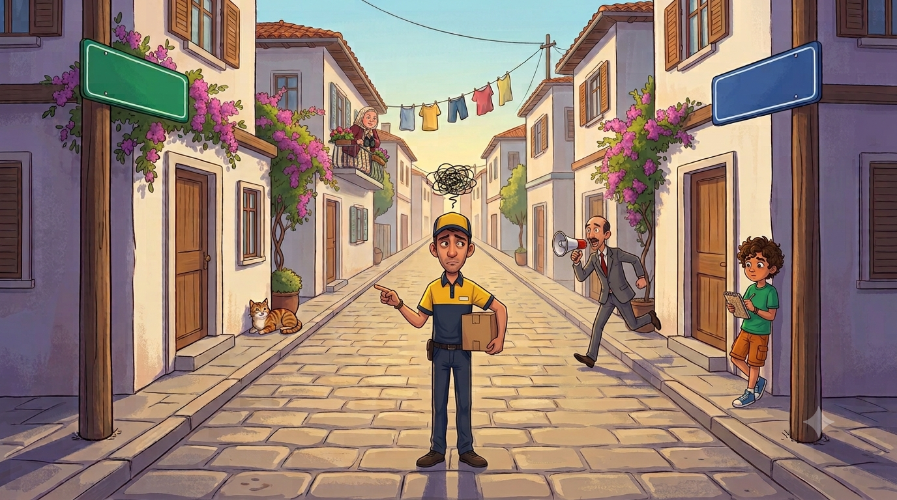
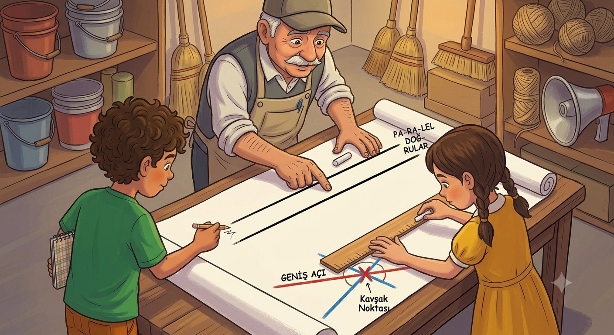
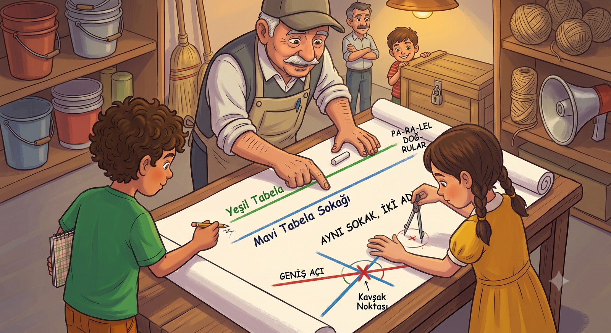
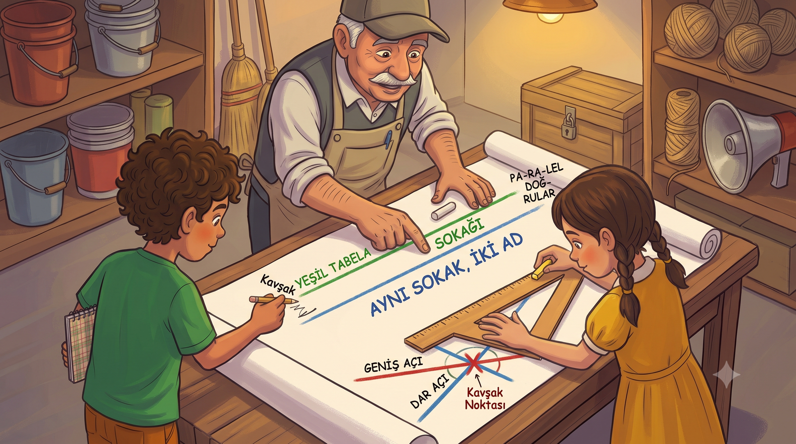

Muhtar mahalleye yepyeni sokak tabelaları taktırdı ama bizim sokağa iki farklı tabela asılınca kargolar karıştı, mahalle birbirine girdi! Kesişen sokaklar, hiç buluşamayan komşular ve iki adı olan tek bir sokak... Kahramanımız haritayla bu işi çözebilecek mi?
Muhtarımız bir sabah yine hoparlörün başına geçti; boğazını üç kere temizledi. Biz artık biliyoruz, üç temizlik büyük haber demek: "Sayın mahalleli! Belediyemiz mahallemize pırıl pırıl yeni sokak tabelaları göndermiştir. Tabelalar bugün asılacaktır. Artık kimse adres soramayacaktır!" Mübeccel Teyze balkondan düzeltti: "Soramayacaktır değil, sormayacaktır!" Muhtar tashih etti. Gün güzel başladı.
Öğlene doğru işler karıştı. Tabelacılar bizim sokağın başına "Gül Sokak", sonuna "Zambak Sokak" tabelası asıp gitmişlerdi. Yani sokağımızın iki adı olmuştu. Kargocu Necmi Abi kapımıza üç kere gelip üç kere gitti: "Bu adres Gül Sokak mı, Zambak Sokak mı? Sistem ikisini ayrı sokak gösteriyor ama ben tek sokak görüyorum. Ben mi yanlış görüyorum?" Necmi Abi'nin gözlerinde, sisteme olan güvenini kaybetmiş bir adamın hüznü vardı.
Muhtar, krizin büyüdüğünü görünce beni işaret etti. Ben daha ağzımı açamadan üçüncü unvanımı almıştım bile: "Sokak Haritası Genel Sorumlusu." Deftere yazdım: "Görev 3: Mahallenin haritasını çıkar, tabela meselesini çöz. Durum: Alışıyorum artık."

Elif'le masaya koca bir kâğıt serdik, mahallenin haritasını çizmeye başladık. Sokakları uzun düz çizgiler olarak çizince bir şey fark ettim: Bizim Menekşe Sokak ile Papatya Sokak, mahallenin bir ucundan öbür ucuna yan yana uzanıyor ama hiçbir yerde buluşmuyorlardı. Tren rayı gibi. Aralarındaki mesafe başta neyse sonda da o.
Dedem haritaya baktı, kasketini kaldırdı: "Bunlara paralel doğrular denir evlat. Ortak noktaları yoktur, kesişmezler, açı da oluşturmazlar." Sonra ekledi: "Menekşe Sokak'taki Hasan ile Papatya Sokak'taki Hüseyin de böyledir. Kırk yıldır aynı mahalledeler, bir kere karşılaşmadılar." Elif sembolünü hemen deftere yazdı: iki küçük eğik çizgi. "Menekşe // Papatya. Ne şık," dedi.
Emre araya girdi: "E benim sokakla sizin sokak?" Haritaya baktık: Emre'nin sokağı bizimkini meydan çeşmesinin orada kesiyordu. Tek bir ortak noktaları vardı: çeşme! "Sizinkiler kesişen doğrular," dedi dedem. "Kesiştikleri yere de kavşak denir. Zaten bütün mahalle çeşmede karşılaşmıyor muyuz?"
🛤️ Defterime not aldım: Hiç kesişmeyen, açı oluşturmayan doğrular: paralelAB // CD. Yalnız bir ortak noktası olanlar: kesişen doğrular — her biri diğerinin kesenidir.

Ertesi gün çeşmenin başına gittik; kesişen sokakları yerinde inceleyecektik. Kavşakta dört köşe var: fırın köşesi, bakkal köşesi, berber köşesi, bir de boş arsa köşesi. Elif yere tebeşirle iki kesişen doğru çizdi, dört açı çıktı ortaya. "Bak abi," dedi, "fırın köşesiyle arsa köşesi zıt yönlere bakıyor. Bunlar ters açılar. Açıölçerle ölç." Ölçtüm: ikisi de tam 60 derece. "Ters açılar her zaman eşittir," dedi Elif. Berber köşesiyle bakkal köşesi de eşitti: ikisi de 120 derece.
Sonra bir şey daha fark ettim: fırın köşesi (60°) ile berber köşesi (120°) yan yanaydı; bir kolları ortaktı. Topladım: 180! Dedem arkamdan bakıyormuş: "Bir kolu ortak olanlara komşu açılar denir. Kesişimde komşu açıların toplamı hep 180 derecedir; bunlara komşu bütünler denir. Komşu dediğin birbirini tamamlayacak evlat," dedi ve anlamlı anlamlı Mübeccel Teyze'nin balkonuna baktı. Mübeccel Teyze o sırada karşı balkondaki Naciye Hanım'la küs olduğu için başka tarafa bakıyordu. Onlar da ters açı gibiydi: birbirine zıt bakıyorlardı ama kızgınlıkları eşitti.
✂️ Defterime not aldım: Kesişen iki doğruda zıt yönlere bakan açılar ters açılardır ve ölçüleri eşittir. Bir kolu ortak açılar komşu açılardır. Toplamı 180° olanlara bütünler, 90° olanlara tümler açılar denir.

Sıra büyük soruya gelmişti: Gül Sokak ile Zambak Sokak. Haritada ikisini ayrı ayrı çizmeye çalıştım. Gül Sokak'ı çizdim: dümdüz bir doğru. Zambak Sokak'ı çizdim: aynı yerden başlıyor, aynı yerden geçiyor, aynı yerde bitiyor. İkinci çizgim, birincinin tam üstüne bindi. Kalemi kaldırdım, baktım: ortada tek bir çizgi vardı.
"Dede!" diye bağırdım. "Bunlar iki ayrı sokak değil! Bütün noktaları ortak! Bu ikisi çakışık!" Dedem güldü: "Doğru söylersin. Tüm noktaları ortak olan doğrulara çakışık doğrular denir. Görünüşte iki isim, gerçekte tek doğru." Yani kargocu Necmi Abi haklıydı: tek sokak vardı, sistemde iki tane görünüyordu.
Haritayı alıp muhtara koştuk. Muhtar haritaya uzun uzun baktı, sonra megafonu eline aldı: "Sayın mahalleli! Yapılan bilimsel inceleme sonucunda Gül Sokak ile Zambak Sokak'ın çakışık olduğu tespit edilmiştir! Sokağımızın adı oylama ile belirlenecektir!" Oylamayı "Gül Sokak" kazandı çünkü Mübeccel Teyze'nin balkonu gül doluydu ve kimse Mübeccel Teyze'yle ters düşmek istemedi. Necmi Abi ertesi gün kargoyu tek seferde teslim etti ve "Sisteme olan güvenim geri geldi," dedi. Ama muhtarın bir şartı vardı: haritanın son kontrolü bana aitti...
🫂 Defterime not aldım: Tüm noktaları ortak olan doğrular çakışık doğrulardır — aslında tek doğrudur! Paralel: hiç ortak nokta · Kesişen: tek ortak nokta · Çakışık: tüm noktalar ortak.

Harita Son Kontrolü! 🎯
Muhtar haritayı panoya asmadan önce son kontrol bizde. Sorulan durumu haritada bulup tıkla!
⭐ Puan: 0❓ Soru: 1/5
🎉 Harita Onaylandı!
Muhtar haritayı çerçeveletti, muhtarlığın duvarına astı. Altına da bir not: "Bu harita, Sokak Haritası Genel Sorumlusu tarafından bilimsel yöntemlerle hazırlanmıştır." Necmi Abi artık adres sormuyor.
Kâşif Defteri — bugün öğrendiklerimiz:
• Paralel doğrularAB // CD — hiç kesişmez, açı oluşturmaz (Menekşe ile Papatya)
• Kesişen doğrular — tek ortak nokta; her biri diğerinin keseni (Çınar ile Emre'nin sokağı)
• Kesişim noktası — meydan çeşmesi!
• Çakışık doğrular — tüm noktalar ortak, aslında tek doğru (Gül = Zambak)
• Ters açılar — zıt yönlere bakar, ölçüleri eşittir
• Komşu açılar — bir kolu ortak; kesişimde toplamları 180° (bütünler)